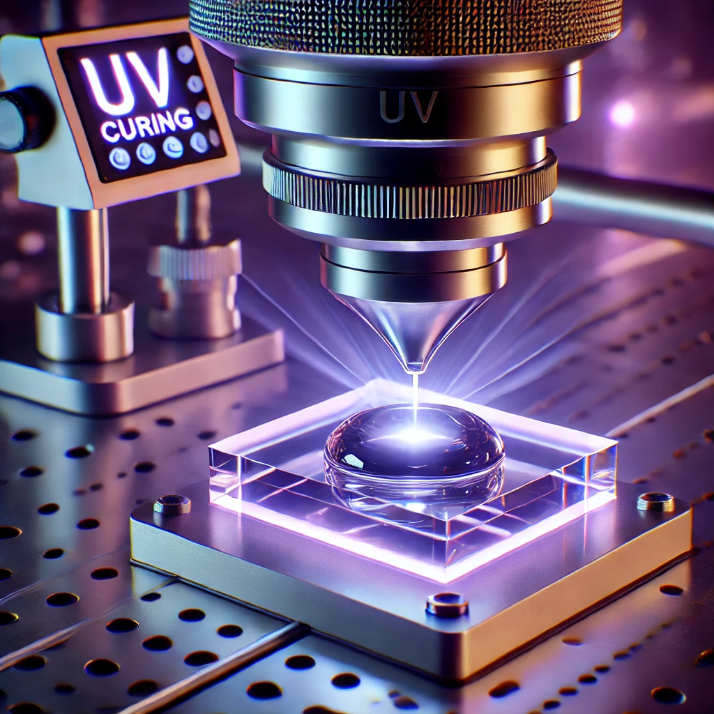

What Is a UV Cure Adhesive?
UV cure adhesives, also known as UV-curable adhesives, are advanced bonding agents that harden when exposed to ultraviolet (UV) light. This cutting-edge technology has revolutionized industrial applications, offering unmatched efficiency, precision, and durability. These adhesives are widely used in industries such as electronics, medical devices, and optical assembly, where quick curing and strong adhesion are essential.
How Do UV Cure Adhesives Work?
UV cure adhesives are composed of oligomers, monomers, photoinitiators, and additives. The curing process begins when UV light activates the photoinitiators, which then trigger a polymerization reaction. This reaction transforms the adhesive from a liquid to a solid state within seconds, creating a strong and durable bond.
Benefits of Using UV Cure Adhesives
The advantages of UV cure adhesives make them indispensable in modern manufacturing processes. Some of the key benefits include:
1. Rapid Curing: UV adhesives cure almost instantly, reducing production time significantly and enhancing operational efficiency.
2. High Bond Strength: These adhesives provide strong and reliable adhesion across various materials, including glass, metals, ceramics, and plastics.
3. Environmentally Friendly: Many UV-curable adhesives are solvent-free, which minimizes emissions of volatile organic compounds (VOCs), making them eco-friendly and safe.
4. Precision and Control: The curing process is highly controllable, enabling precise application in intricate designs and assemblies.
Applications of UV Cure Adhesives
UV cure adhesives are utilized across multiple industries due to their versatility and efficiency. Key applications include:
Electronics: These adhesives are used for encapsulating sensitive components, wire tacking, and bonding materials where heat-sensitive parts are involved.
Medical Devices: UV adhesives are ideal for assembling medical equipment such as syringes, catheters, and other devices requiring high precision and durability.
Optical Components: Due to their clarity and non-yellowing properties, UV adhesives are extensively used in bonding lenses, prisms, and other optical assemblies.
Automotive: In the automotive industry, UV adhesives are used for bonding glass and plastic components, ensuring long-lasting performance under extreme conditions.
Considerations When Using UV Cure Adhesives
While UV cure adhesives are highly advantageous, there are certain considerations to keep in mind:
1. Light Penetration: For effective curing, UV light must reach the entire adhesive surface. Areas that are shadowed or obstructed may not cure properly.
2. Material Compatibility: Not all substrates are suitable for UV curing. It’s crucial to test the adhesive on your materials before full-scale application.
3. Equipment Requirements: A proper UV curing setup, including lamps or LEDs emitting UV light at the correct wavelength, is essential for optimal results.
4. Safety Measures: UV light can be harmful to the skin and eyes. Always use protective gear and ensure proper shielding during the curing process.
Conclusion
UV cure adhesives are a game-changing solution for industries that demand fast, precise, and durable bonding. From electronics to medical devices and optical assemblies, their applications are vast and ever-growing. By understanding their benefits, working mechanism, and necessary precautions, businesses can harness the full potential of UV-curable adhesives for superior results.